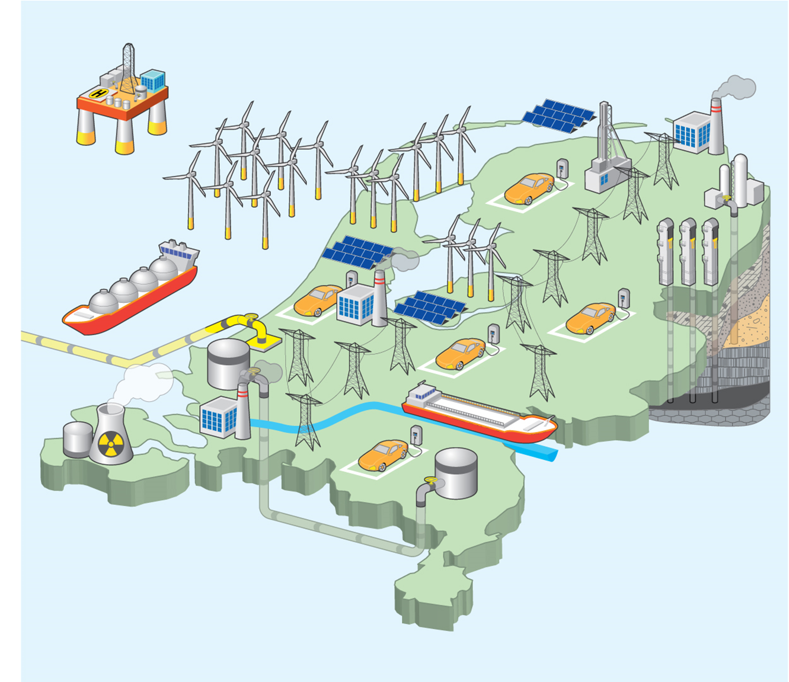

Data center
Nederland wil duurzamer worden en minder afhankelijk zijn van fossiele brandstoffen. Het doel is dat in 2023
zestien procent van de energievoorzieningen groen is. Het terugdringen van de CO2-uitstoot is hierbij een
belangrijk doel. Daarmee hoopt men te voorkomen dat de aarde verder opwarmt. Nederland gebruikt echter relatief
veel steenkool, aardolie en aardgas. In 2015 werden er zelfs nog meer kolencentrales geopend! Maar, er wordt ook
een aantal gesloten.
Om het gebruik van duurzame energie te stimuleren geeft de overheid soms geld aan producenten en consumenten.
Dit noem je subsidies. Elektriciteitscentrales krijgen dit bijvoorbeeld wanneer ze biomassa meestoken en particulieren
als ze zonnepanelen op hun dak zetten.
De overgang naar een duurzame energievoorziening hoeft niet heel ingrijpend te zijn. Neem
warmtekrachtkoppeling.
Hierbij wordt warmte afkomstig van bijvoorbeeld een elektriciteitscentrale niet via het koelwater geloosd, maar
nuttig gebruikt om een kantoor of zwembad mee te verwarmen. De
afvalverbrandingsinstallatie in Alkmaar levert op
deze manier restwarmte aan het AZ-stadion. Daar zie je niks van, maar soms is duurzame energie wel zichtbaar.
Tel maar eens het aantal windmolens rondom het IJsselmeer!
Overigens kun je duurzame energie vanuit meerdere invalshoeken bekijken. In de aardrijkskunde noemen we
dit dimensies. Er is de natuurlijk, sociaal-culturele, economische en politieke dimensie.
Een kolencentrale mag dan vervuilend zijn (natuurlijke dimensie), het is goedkopere energie
dan van een offshore windpark (economische dimensie). Als de overheid energiebesparing stimuleert
(politieke dimensie), gaan mensen hopelijk zuiniger met energie om (sociaal-culturele dimensie).
Nieuwsartikel Data center Noord-Holland
